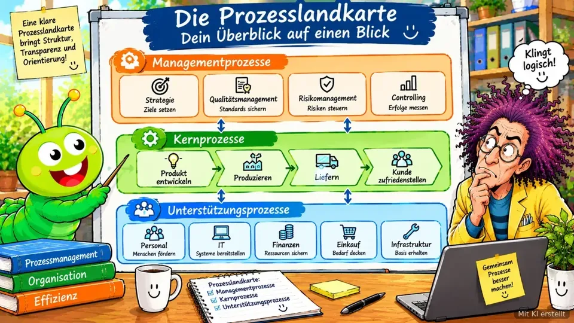

Nachschlagen statt Fachbuch wälzen
Begriffe von A bis Z
Jedes Fachwort aus dem Prozessmanagement in zwei Sätzen erklärt, ohne Fachchinesisch. Wo es passt, führt ein Klick direkt zur Lektion, die den Begriff ausführlich zeigt.

Mit KI erstellt81 Begriffe
0–9
5-Why
Fünfmal „Warum?“ fragen, bis du bei der Ursache statt beim Symptom bist.
51-Prozent-Regel
Wer am Ende den größten Nutzen vom Ergebnis hat, trägt die Hauptverantwortung.
5S
Sortieren, Systematisieren, Sauberkeit, Standardisieren, Selbstdisziplin.
A
ADKAR
Awareness, Desire, Knowledge, Ability, Reinforcement: Veränderung aus Sicht des Einzelnen.
Agil
In kleinen Schritten arbeiten und oft nachsteuern, statt alles vorab festzulegen.
AI Act
EU-Gesetz für Künstliche Intelligenz. Je höher das Risiko einer KI-Anwendung, desto strenger die Regeln.
Andon
Ein Signal (Lampe, Knopf, Zuruf), mit dem jeder sofort auf ein Problem aufmerksam machen darf.
Aufgabe
Ein einzelner Schritt innerhalb eines Prozesses oder Projekts.
Auftragsklärung
Vor dem Start klären: Was genau soll herauskommen, wer will es, bis wann, was ist ausdrücklich nicht gemeint?
Ausführende
Die Menschen, die den Prozess jeden Tag tatsächlich durchführen.
B
Bierdeckel-Skizze
Fünf Fragen: Wer liefert, was kommt rein, welche Schritte, was kommt raus, wer bekommt es?
BPMN
Genormte Zeichensprache für Ablaufbilder mit festen Symbolen. Nützlich, wenn Programme den Ablauf lesen sollen. Für den Anfang reichen Kästchen und Pfeile.
C
Clean Core
„Sauberer Kern“: Standard-Software möglichst unverändert lassen und Sonderwünsche außen herum lösen. Das macht spätere Updates leichter.
D
Der ganze Weg
Ein Prozess vom Wunsch des Kunden bis zu dem Moment, in dem er bekommt, was er wollte. Quer durch alle Abteilungen.
Digitaler Zwilling
Ein digitales Abbild von etwas Echtem, zum Beispiel von einem Ablauf oder vom Wissen einer Person.
Durchlaufzeit
Zeit vom Start bis zum fertigen Ergebnis. Enthält Bearbeitung und Wartezeit, meist ist die Wartezeit der größere Teil.
E
Einführungsfreigabe
Das offizielle grüne Licht, bevor ein neuer Prozess live geht.
Eskalation
Ein Problem bewusst an die nächsthöhere Stelle geben, weil es auf der eigenen Ebene nicht zu lösen ist. Kein Petzen, sondern ein vereinbarter Weg.
F
Fischgräten-Diagramm
Sucht Ursachen entlang der 7M: Mensch, Maschine, Methode, Material, Management, Mitwelt, Messung.
Führungsprozess
Gibt die Richtung vor: Strategie, Planung, Steuerung.
G
Genchi Genbutsu
Geh an den Ort des Geschehens, statt nur zu vermuten.
Governance
Spielregeln, die als Leitplanken wirken, nicht als Stoppschilder.
H
Halluzination
Eine KI erfindet eine Antwort, die überzeugend klingt, aber falsch ist.
Hypothese
Eine Annahme, die du lieber kurz testest, statt lange darüber zu diskutieren.
I
Input
Was in den Prozess hineingeht: Material, Werkzeug, Informationen.
Ist-Prozess
So, wie ein Ablauf heute wirklich läuft. Nicht wie er auf dem Papier steht.
J
Jidoka
Ein System stoppt sich selbst, sobald etwas nicht stimmt.
K
Kanban
Arbeit fließt über ein Board. WIP-Limits begrenzen, wie viel gleichzeitig läuft.
Kennzahl
Zeigt, ob ein Prozessziel erreicht wird. Lieber 2 bis 3 pro Ziel als eine Zahlenflut.
Kennzahl-Steckbrief
Halbe Seite pro Kennzahl: wofür, wie berechnet, wer schaut drauf, was passiert bei schlechten Werten.
Kernprozess
Das, wofür der Kunde bezahlt. Ohne ihn läuft nichts.
KI als Dienst
Fertige KI, die man über das Internet mietet, statt sie selbst zu bauen. Schnell, aber man wird abhängig.
KI-Agent
Erledigt nach festen Regeln auch die Aufgabe, statt nur zu antworten.
Kollegiale Fallberatung
Kolleginnen und Kollegen beraten in fester Reihenfolge zu einem konkreten Problem. Der Fallgeber hört erst zu und entscheidet dann selbst.
Konvention
Eine vereinbarte Regel, wie etwas gemacht wird. Hält nur mit sichtbarem Nutzen.
Kraftfeldanalyse
Was treibt ein Ziel an, was bremst es? Bremsen lösen, Treiber verstärken.
L
Lean
Denkweise aus der Autoindustrie (Toyota): alles weglassen, was dem Kunden nichts bringt.
Live-Gang
Der Tag, ab dem ein neuer oder geänderter Ablauf im Alltag gilt.
M
Maschinelles Lernen
Der Computer leitet Regeln aus vielen Beispielen selbst ab, statt dass jemand jede Regel programmiert.
Meilenstein
Wichtiger Zwischenpunkt in einem Projekt, an dem etwas Bestimmtes fertig sein soll.
Moderation
Ein Treffen so leiten, dass alle zu Wort kommen und am Ende ein Ergebnis steht. Die Moderation entscheidet nicht über den Inhalt.
N
Neuronales Netz
Rechenmodell, grob dem Gehirn nachempfunden: viele verbundene Rechenknoten, die gemeinsam Muster erkennen.
Nutzen-Aufwand-Matrix
Ordnet Maßnahmen nach Nutzen und Aufwand. Viel Nutzen, wenig Aufwand zuerst.
O
Output
Was am Ende herauskommt, und für wen.
P
Poka Yoke
Fehler technisch unmöglich machen, statt sie nur zu verbieten.
Process Board
Kleines Gremium aus Process Ownern, das übergreifend über Prozesse entscheidet.
Process Mining
Wertet die Datenspuren eines Prozesses aus. Sieht nur, was digital läuft.
Process Owner
Trägt die langfristige Verantwortung und entscheidet über größere Änderungen.
Projekt
Einmalig, mit Start, Ende und eigenem Ziel. Zum Beispiel ein Umzug.
Prompt
Der Arbeitsauftrag an die KI. Gut gebaut aus Rolle, Kontext, Aufgabe, Leitplanken, Ergebnis.
Prozess
Eine Abfolge von Schritten, die immer wieder gleich zu einem Ergebnis führt. Wiederholbar ist das Entscheidende.
Prozess-Neugestaltung
Einen Ablauf grundlegend neu denken statt nur kleine Stellen zu flicken. Im Englischen oft „Redesign“ genannt.
Prozessbegehung
Den Prozess vor Ort mit den Ausführenden durchgehen, statt nur Papier zu lesen.
Prozessebenen
Wie ein Inhaltsverzeichnis: oben der große Ablauf, darunter Teilschritte, ganz unten die Handgriffe.
Prozesskreislauf
Die Abfolge vom Ziel über Aufnehmen, Untersuchen und Verbessern bis zur Einführung und zum Messen. Danach beginnt es von vorn.
Prozesslandkarte
Übersicht aller wichtigen Abläufe eines Bereichs, ohne jeden Handgriff.
Prozessmanager
Hält den Prozess im Alltag am Laufen und treibt Verbesserungen voran.
Prozessportfolio
Überblick, welche Prozesse wie wichtig sind und wie gut sie laufen. Hilft zu entscheiden, wo man zuerst anpackt.
Prozesssteckbrief
Ein-Seiten-Ausweis eines Prozesses: Name, Ziel, Start, Ende, Verantwortung, Kennzahl.
PUSH und PULL
PUSH: vom Input vorwärts, für den IST-Prozess. PULL: vom Ergebnis rückwärts, für den SOLL-Prozess.
R
Regelkreis
Planen, machen, prüfen, nachsteuern. Und dann von vorn, mit festem Prüftermin.
Reifegrad
Wo eure Prozesse stehen, von chaotisch bis systematisch verbessert. Ein Standort, kein Urteil.
S
Schnittstelle
Die Übergabe zwischen zwei Beteiligten. Hier geht am meisten verloren.
Schwimmbahn
Eine Bahn pro beteiligter Person im Ablaufbild. Wechselt ein Pfeil die Bahn, ist das eine Übergabe.
Scrum
Arbeitsweise für Teams: in kurzen, festen Zeitabschnitten etwas Fertiges liefern und danach gemeinsam zurückschauen.
SIPOC
Englische Abkürzung für die Bierdeckel-Skizze: Lieferant, Eingang, Schritte, Ergebnis, Empfänger.
SMART
Spezifisch, Messbar, Attraktiv, Realistisch, Terminiert: die Prüfliste für Ziele.
SMED
Schnelles Umrüsten: vorbereiten, solange Zeit ist.
Soll-Prozess
So, wie ein Ablauf künftig laufen soll.
Sprachmodell
KI, die gelernt hat, welches Wort wahrscheinlich als Nächstes kommt. Steckt hinter Chatbots.
Sprint
Fester Zeitabschnitt in Scrum, meist ein bis vier Wochen.
Stakeholder
Alle, die von einer Veränderung betroffen sind. Eingeschätzt nach Einfluss und Einstellung.
Start-Auslöser
Das Ereignis, mit dem ein Prozess beginnt. Etwa: Rechnung kommt an.
T
Trainingsdaten
Die Beispiele, aus denen eine KI lernt. Sind sie einseitig, wird auch die KI einseitig.
U
Überanpassung
Die KI hat ihre Beispiele auswendig gelernt statt die Regel dahinter und versagt bei neuen Fällen.
Übergabe
Die Stelle, an der Arbeit von einer Person oder Abteilung zur nächsten wandert. Hier geht am meisten Zeit und Wissen verloren.
Unterstützungsprozess
Hält den Kern am Laufen, zum Beispiel Buchhaltung oder IT.
V
Veränderungsmanagement
Menschen durch eine Veränderung begleiten, damit sie verstehen, mitmachen und dabei bleiben. Im Englischen „Change Management“.
Verschwendung
Alles, was Zeit kostet, aber keinen Wert schafft: Warten, Suchen, Nacharbeit, unnötige Wege.
Verzerrung
Eine KI bevorzugt oder benachteiligt etwas, weil ihre Trainingsdaten einseitig waren. Im Englischen „Bias“.
W
Workshop
Arbeitstreffen, in dem eine Gruppe gemeinsam an einer Frage arbeitet. Mit Ziel, Ablauf und festgehaltenem Ergebnis.
Diesen Begriff gibt es hier noch nicht. Schreib uns, welcher fehlt.